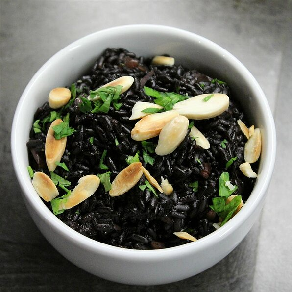

Black Rice

Carribean Black Rice
Black rice is one of the handful of superfoods. This rice is so flavorful and has a very unique presentation as
it cooks
up to a deep purple color. This rice goes great with just about any meal as a nice healthy side. I love to make
it with
salmon and a side of fresh veggies.
Ingredients
- 2 Tablespoons Butter
- 1 Cup Black Rice
- 1/4 Cup diced onion
- 1/4 cup Silvered Almonds
- 1 3/4 Cups Water
- 1 Cube Chicken Bouillion
Steps
- Melt butter in a saucepan over medium heat. Add black rice, onion, and almonds; cook and stir until lightly
toasted, 5
to 10 minutes.
- Add water and bouillon cube; bring to a boil.
-
Reduce hear to low, cover, and simmer until rice is tender and liquid is absorbed, 25 to 30 minutes.
Return to main page